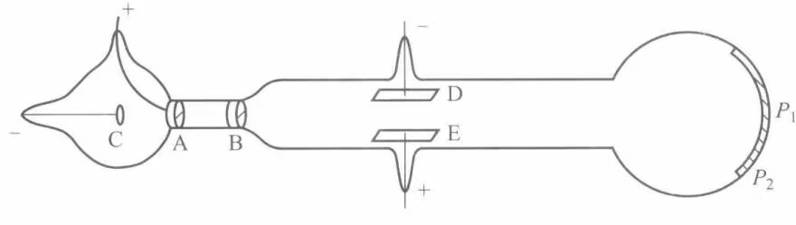

1833年，M. Faraday提出电解定律，由此推得：1 mol任何原子的单价粒子永远带有相同的电荷量.
这个电荷量就是Faraday量\(F\)，其值是Faraday在实验中首次确定的.
1897年，J. J. Thomson真正从实验上确认了电子的存在.

阴极射线从阴极C发出后通过狭缝A、B成一狭窄的射线，再穿过两片平行的金属板D、E之间的空间，最后到达右端带有标尺的荧光屏上.
去掉电场，由于磁场方向与射线运动方向垂直，将使射线构成一圆形轨迹，若此圆形轨迹的半径为\(r\)，则射线内的粒子（质量为\(m\)）受到的离心力为\(mv^2/r\)，它一定与磁场力\(Hev\)相平衡.
既然\(v\)已算出，\(e/m\)就可以求出.
电子电荷的现代值为：
$$e = 1.602 176 620 8(98)\times 10^{-19}C$$精度达千万分之一.
括号内的\((98)\)表示最后几位数字的误差\(208\pm 98\)
从实验测得的\(e/m_e\)及\(e\)的数值，可以定出电子的质量为：
$$m_e = 9.10938356(11)\times 10^{-31}\text{kg}$$至于电子质量为什么是这个数值，今天的物理学尚无法解答.
利用\(e/m_e\)和\(e/m_p\)，可导出质子质量与电子质量之比值：
$$m_p/m_e = 1836.15267389(17)$$从\(m_p/m_e\)及\(m_e\)的数值，可以导出：
$$m_p = 1.672621898(21)\times 10^{-27}\text{kg}$$用千克为单位计算原子的质量，显然是很不适宜的.
在原子范畴内，普遍采用原子质量单位\(u\).
国际上规定：12C的质量为\(12\text{u}\).
由此可定出：
$$m_p = 1.007276466879(91)\text{u}$$在粗糙的估算中可以当作一个\(u\).
\(1 \text{mol}\)（摩尔）分子（或原子）的分子（或原子）数目.
1909年，卢瑟福的助手H. Geiger和学生E. Marrsden在用\(\alpha\)粒子轰击原子的实验中，发现\(\alpha\)粒子在轰击原子时约有1/8000的概率被反射回来.
1911年，卢瑟福提出核式结构模型.